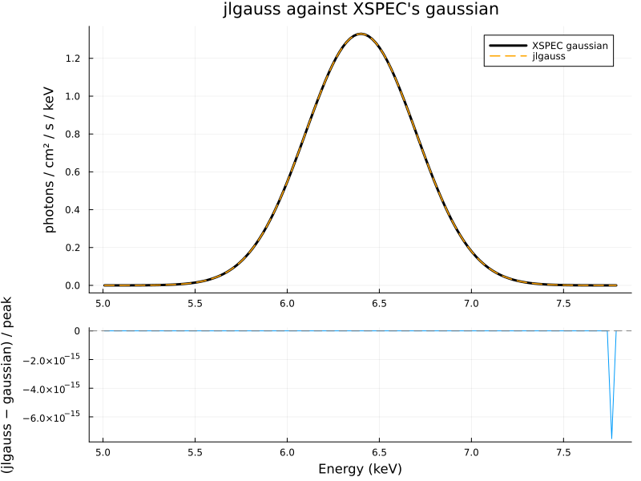
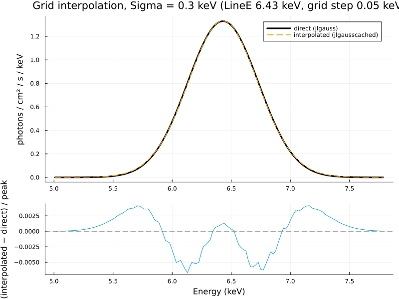
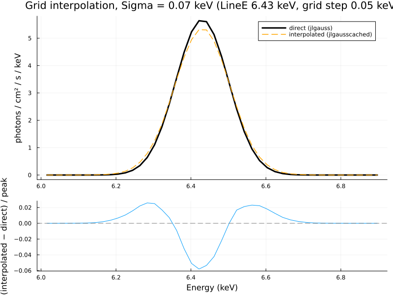
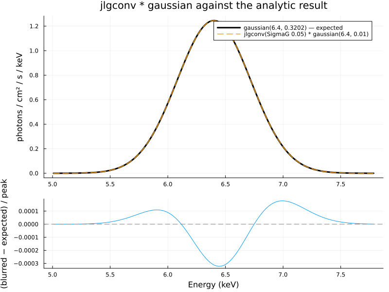
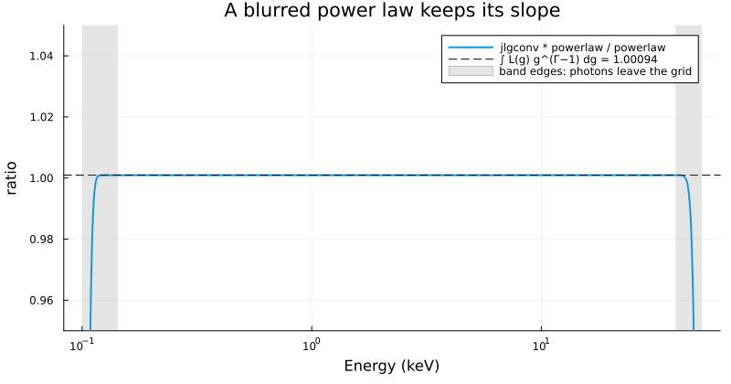
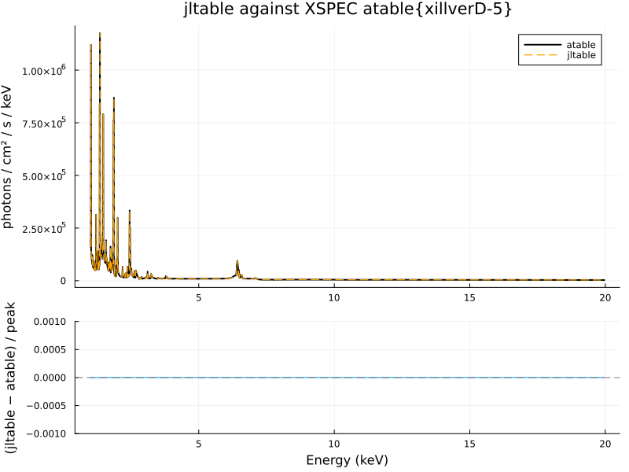
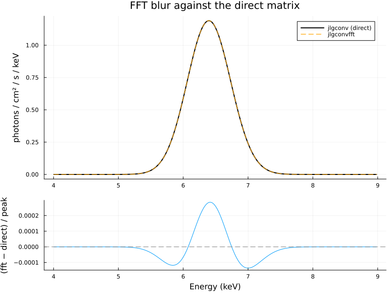
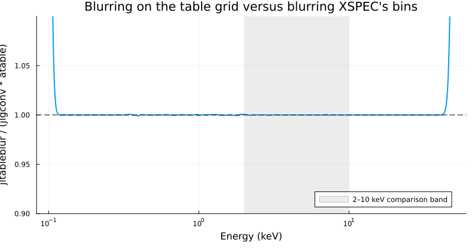

Verification
Unit tests check each piece of JuliaXSPEC in isolation (test/runtests.jl, run with julia --project=. -e 'using Pkg; Pkg.test()'). The comparisons on this page go further: they run the compiled models inside XSPEC and compare them with XSPEC's own models, so they exercise the C bridge, the generated model.dat, XSPEC's parameter handling and the Julia code together.
Running the comparisons
From the verification/ directory, after both build steps:
xspec - phase1.xcm # Gaussian models
xspec - phase2.xcm # table, FFT and composite blur (needs xillverD-5.fits)
julia --project=. -e 'using Pkg; Pkg.develop(path = ".."); Pkg.instantiate()' # first time only
julia --project=. compare.jl # prints the summary below and writes the figuresphase1.xcm defines a small Tcl procedure that evaluates the current model on a 2000-bin logarithmic grid from 0.1 to 50 keV (dummyrsp) and writes the model density (what plot model shows) to a text file. compare.jl reads the pairs, reports the largest difference as a fraction of the reference model's peak, and fails if any tolerance is exceeded.
Results
jlgauss vs XSPEC gaussian (LineE 6.4, Sigma 0.3) max |Δ| / peak = 1.27e-08 tolerance 1.0e-06 ok
jlgausscached vs jlgauss (LineE 6.43, Sigma 0.3) max |Δ| / peak = 6.69e-03 tolerance 2.0e-02 ok
jlgausscached vs jlgauss (LineE 6.43, Sigma 0.07) max |Δ| / peak = 5.80e-02 tolerance 5.0e-01 ok
jlgconv(0.05) * gaussian(6.4, 0.01) vs gaussian(6.4, 0.3202) max |Δ| / peak = 3.22e-04 tolerance 5.0e-03 ok
jlgconv(0.05) * powerlaw(2.5) vs 1.00094 * powerlaw(2.5) max |Δ| / peak = 3.02e-06 tolerance 2.0e-03 ok1. Direct evaluation: jlgauss against gaussian
Both integrate the same Gaussian over the same bins, so they should agree to rounding. They do: the largest difference is $10^{-8}$ of the peak. This confirms that parameters arrive in the right order, that the result is interpreted as photons per bin, and that nothing is lost in the C bridge.

2. Grid interpolation: jlgausscached against jlgauss
jlgausscached computes the Gaussian only at grid corners (LineE every 0.05 keV, Sigma logarithmically spaced) and interpolates. At LineE = 6.43 keV, between grid points, a 0.3 keV wide line is reproduced to 0.7% of the peak:

A 0.07 keV wide line, comparable to the grid step, shows the characteristic signature of multilinear interpolation: the blend of the two neighbouring corners is lower at the peak and higher in the wings than the true line, here by 6% of the peak:

This is not a bug but the behaviour to design around: the grid spacing must be small compared to the width of the features (see Caching on a grid). The tolerances in compare.jl are set accordingly — tight for the broad line, loose for the narrow one, whose purpose is to show the effect.
3. Convolution of a narrow line: jlgconv * gaussian
A Gaussian kernel in $g$ with $\sigma_g = 0.05$ applied to a line at 6.4 keV with $\sigma = 0.01$ keV must give a Gaussian of width $\sqrt{(0.05 \times 6.4)^2 + 0.01^2} = 0.3202$ keV (Convolution, step 10). XSPEC's gaussian with that width agrees to $3 \times 10^{-4}$ of the peak; the residual has the shape of a tiny width difference, from the uniform-within-bin approximation applied to the 0.01 keV input line on 0.003 keV bins.

4. Convolution of a power law: jlgconv * powerlaw
A kernel in $g$ cannot change the slope of a power law, only its normalisation, by $\int L(g)\,g^{\Gamma - 1}\,dg$ (1.00094 for $\Gamma = 2.5$ and this kernel). The ratio of the blurred to the unblurred power law is flat at that value across the grid, to $3 \times 10^{-6}$, except within a factor $g_{\max} = 1.3$ of the top and $g_{\min} = 0.7$ of the bottom of the grid, where photons are shifted off the grid — exactly the band-edge effect described in step 7 of the Convolution page, and the reason to use XSPEC's energies extend with any convolution model.

Phase 2
phase2.xcm uses the same 0.1–50 keV grid.
jltable vs atable{xillverD-5} at the file's default parameters max |Δ| / peak = 0.00e+00 tolerance 1.0e-03 ok
jlgconvfft vs jlgconv, both blurring gaussian(6.4, 0.1) max |Δ| / peak = 2.85e-04 tolerance 1.0e-03 ok
jltableblur vs jlgconv * atable, 2–10 keV max |Δ| / peak = 6.41e-04 tolerance 2.0e-03 ok5. jltable against atable{xillverD-5.fits}
Both interpolate the same FITS file. The default parameters lie on the Gamma, iron, ionisation and density grid points, and halfway between two inclination points, so this checks the interpolation as well as the file reader. The two spectra are identical, bin for bin: the largest difference is zero. XSPEC's atable also has a redshift parameter, left at zero here.

6. FFT against the direct matrix
jlgconvfft and jlgconv blur the same Gaussian line. The largest difference is $3 \times 10^{-4}$ of the peak, which is the rebinning onto the FFT's logarithmic working grid and back. The direct matrix remains the definition of the operator; the FFT is the same operator computed a faster way (Convolution, step 6).

7. Blurring on the table grid
jltableblur convolves the xillver table from the table's own bins (0.07 to 1000 keV) onto XSPEC's bins. jlgconv * atable{...} first rebins the table onto XSPEC's bins and only then blurs, so photons that would redshift in from outside the response are missing. Through 2–10 keV the two agree to $6 \times 10^{-4}$ of the peak. At the ends of the grid the composite is higher, which is the band-edge effect of step 7: those photons exist in the table and not in the spectrum XSPEC handed to jlgconv.

Planned comparisons
Relativistic blurring kernels against relxill's relconv, relconv_lp and relxilllp are the next check, once those kernels exist.